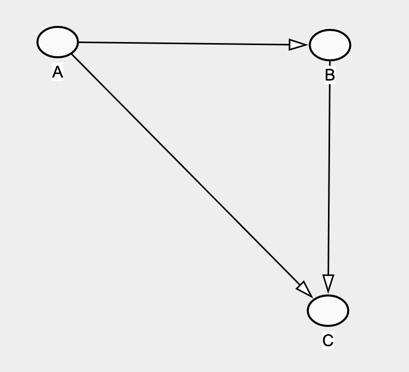
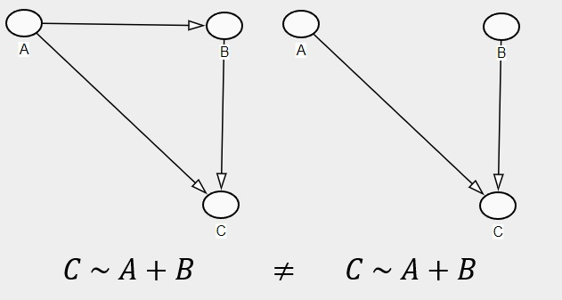
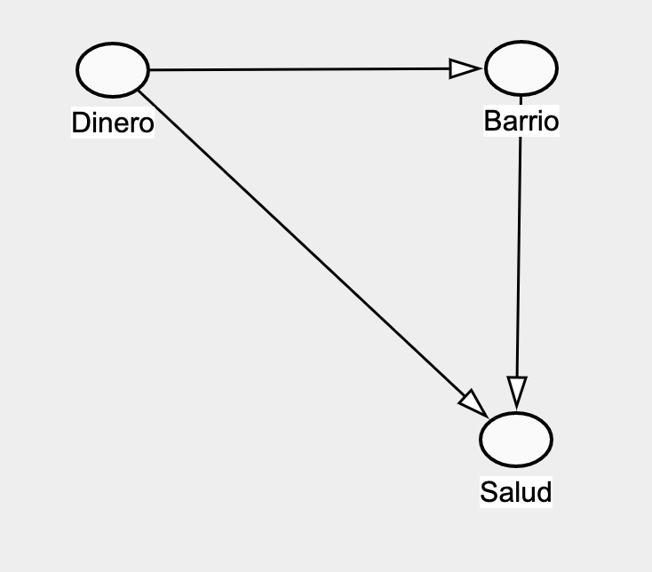
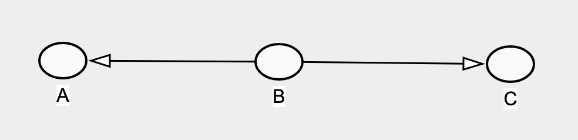
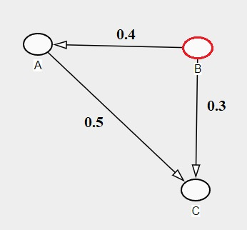

Confounders
Correlaciones
Todos nos hemos topado c
el sitio de Tyler Vigen sobre correlaciones espurias; son sencillas de ver y hasta caricaturescas.
Directed Acyclic Graphs (DAG’s)
Los DAG’s son representaciones visuales de las relaciones causales entre las diferentes variables que medimos y estamos considerando incluir en nuestros modelos. La definición de cada una de las relaciones causales son generadas de nuestro entendimiento , por lo que es donde vamos a racionalizar y darle una estructura lógica a nuestro análisis. Los DAGs van más allá de solo ayudarnos a crear nuestros modelos, sino que son instrumentos que anclan nuestros modelos a la realidad. Cuando presentamos un modelo sin su DAG, estamos asumiendo que las personas no solo manejan la misma información que nosotres sino que comprenden las implicaciones sobre cada una de las variables.

A partir de un DAG vamos a racionalizar el modelo estadístico que queremos desarrollar, por ejemplo, del DAG anterior podemos generar 3 modelos diferentes que pueden responder a diferentes preguntas:
\[ a)\;\;\;\; C \sim A + B \\ b)\;\;\;\;C \sim A \\ c)\;\;\;\;C \sim B \]
No solo estos modelos son diferentes entre si, sino que también significan cosas completamente diferentes si el DAG cambia. Por ejemplo el modelo (a), nos va a dar el efecto parcial de A sobre C, si asumimos que A tiene un efecto sobre C a través de B (Figura 1); sin embargo, si asumimos que A y B no están correlacionados, ese mismo modelo nos daría el efecto total de A sobre C.

Cómo no dejarse engañar por un DAG 101
Los DAGS pueden son engañosos si no estamos preparados para confrontarlos y analizarlos, a continuación las cosas que debemos tener en cuenta a la hora de analizar un DAG.
La Pregunta
Lo primero que necesitamos para no dejarnos engañar por un DAG es responder a la pregunta:
¿Qué relación estamos buscando?
El DAG de la relaciones entre el dinero, barrio y salud de una persona (Figura 2) tiene la capacidad de responder diferentes preguntas:
¿Cuál es el efecto total del dinero sobre la salud?
¿Cuál es el efecto directo del dinero sobre la salud?
¿Cuál es el efecto total del barrio sobre la salud?
¿Cuál es el efecto parcial del dinero sobre la salud a través del dinero?

Dependiendo de la pregunta, este DAG nos permitirá construir diferentes modelos y además diferentes interpretaciones de los estimadores.
Los Jinetes del Apocalípsis
A la hora de analizar nuestro DAG, debemos tener particular cuidado con 3 relaciones entre variables que pueden ser contraintuitivas.
The Fork

Un Fork se presenta cuando una variable afecta a otras dos variables y puede generar una correlación espuría entre A y C. Esta correlación se crea porque A y C contienen información sobre la variación de B y es esa información genera una correlación entre A y C. Una manera de evitar esta correlación es haciendo una corrección por la variable B dentro de nuestro modelo. Al incluir B, el modelo va a tomar la porción de la variación de A y C que corresponde a B y la asigna a B, “liberando” A y C del Fork.

A continuación, vamos a realizar simulaciones de la situación en la figura 5 y ver qué sucede con los diferentes modelos cuando nuestra pregunta es ¿Cuál es el efecto de A sobre C?.
Variables
Aquí definimos las variables de acuerdo al DAG anterior.
De acuerdo con la información que tenemos, el efecto de A sobre C debería ser de 0.5, ya que todo el efecto de A sobre C se da manera directa.
Modelos
Debido a que queremos conocer la relación entre A y C y además no hay efecto de A sobre C a través de B (como sucede en la Figura 1), se podría considerar utilizar el siguiente modelo:
\[ C \sim A \]
Los resultados del modelo son los siguientes:
| Characteristic | Beta | 95% CI1 | p-value |
|---|---|---|---|
| A | 0.74 | 0.73, 0.75 | <0.001 |
| 1 CI = Confidence Interval | |||
Inmediatamente observamos un problema, el efecto de A sobre C según nuestro modelo es de 0.73 ± 0.1 y no 0.5. Este es el efecto del Fork sobre nuestro modelo. Además de la relación directa entre A y C, el modelo está tomando en cuenta la relación espuria que se produce entre A y C a través de B. Porqué? Porque el modelo no sabe la dirección de las relaciones entre las variables, entonces asume que la información que comparten A y C sobre B va en dirección $ A \rightarrow B \rightarrow C $